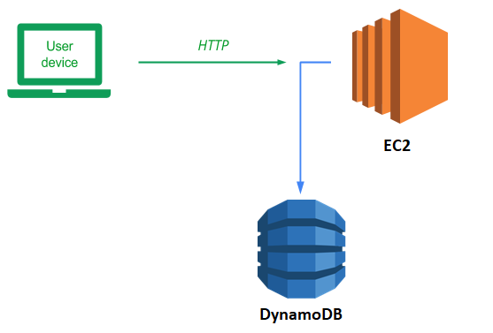
DynamoDB is a serverless NoSQL database that is managed completely by AWS. Such a service obviates the need for application developers to manage and maintain a backend database server of their own.
Recall our Guestbook application and its MVP architecture. By defining an abstract base class for the backend Model, our implementation allows us to replace one model implementation with another without changing our application code. To begin with, in your local Ubuntu VM checkout the course repository and change into the code directory.
git clone https://github.com/wu4f/cs430-src cd cs430-src/05_aws_dynamodb
In examining the code, notice that it is largely the same as our prior code with a handful of differences. The first is that the name of the script is now application.py to follow the naming convention of some of the AWS services such as Elastic Beanstalk. The second is that the initializer for the gbmodel class (__init__.py) now supports a new model backend to support DynamoDB.
gbmodel/__init__.py
# __init__.py
model_backend = 'dynamodb'
if model_backend == 'pylist':
from .model_pylist import model
elif model_backend == 'dynamodb':
from .model_dynamodb import modelFinally, the code implementing the DynamoDB backend database model has been added (model_dynamodb.py).
Our code for model_dynamodb creates a DynamoDB table if one does not exist and implements our select and insert. When gbmodel is instantiated, the code sets up a DynamoDB resource and a DynamoDB table named guestbook. If the guestbook table already exists, the call to load() the table will succeed. If not, a new table is created.
When creating the new table, the KeySchema defines a primary key and a range key for the table using email and date. The AttributeDefinitions define email and date as attributes with the type string. Lastly, we set the minimum ProvisionedThroughput which will be plenty for the purposes of this lab.
gbmodel/model_dynamodb.py
from datetime import datetime
import boto3
class model(Model):
def __init__(self):
self.resource = boto3.resource("dynamodb")
self.table = self.resource.Table('guestbook')
try:
self.table.load()
except:
self.resource.create_table(
TableName="guestbook",
KeySchema=[
{
"AttributeName": "email",
"KeyType": "HASH"
},
{
"AttributeName": "date",
"KeyType": "RANGE"
}
],
AttributeDefinitions=[
{
"AttributeName": "email",
"AttributeType": "S"
},
{
"AttributeName": "date",
"AttributeType": "S"
}
],
ProvisionedThroughput={
"ReadCapacityUnits": 1,
"WriteCapacityUnits": 1
}
)The select method is implemented by calling scan() on the table. This returns all of the guestbook entries.
gbmodel/model_dynamodb.py
def select(self):
try:
gbentries = self.table.scan()
except Exception as e:
return([['scan failed', '.', '.', '.']])
return([ [f['name'], f['email'], f['date'], f['message']] for f in gbentries['Items']])The insert method prepares the item as a Dict and then calls put_item to add the item to the table.
gbmodel/model_dynamodb.py
def insert(self,name,email,message):
gbitem = {
'name' : name,
'email' : email,
'date' : str(datetime.today()),
'message' : message
}
try:
self.table.put_item(Item=gbitem)
except:
return False
return TrueHybrid cloud deployments will have some infrastructure running on-premise and some hosted in the cloud provider. In this version, we'll start with running the web application on your Ubuntu VM and connect it up to the DynamoDB model backend that is hosted on your AWS account. Visit the source directory of the application.
cd cs430-src/05_aws_dynamodb
View the requirements.txt file. The main packages we need will be flask and AWS's Python package for accessing all of its services: boto3. The gunicorn package is also to support a subsequent version that runs within a Docker container.
requirements.txt
# Web framework
flask
# AWS libraries
boto3
# Python WSGI HTTP server (connects web servers such as nginx to app)
gunicornSet up the virtual environment and install the requirements:
python3 -m venv env source env/bin/activate pip install -r requirements.txt
boto3 requires a valid set of AWS credentials in order to authenticate properly to the backend DynamoDB instance of your AWS account. Unfortunately, our classroom environment will not allow us to create credentials of our own that have least privileges. We will instead use the full credentials of the account we are given. Account credentials can be obtained via the Vocareum "AWS Details" UI as described at the beginning of the course in the AWS Academy setup. Then, next to the "AWS CLI", click on the "Show" button to reveal the account's key information.
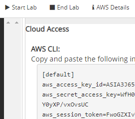
There are 3 variables here: the AWS_ACCESS_KEY_ID, the AWS_SECRET_ACCESS_KEY, and an AWS_SESSION_TOKEN. Typically, only the first two are needed to authenticate an application's access to AWS services. With the way Vocareum is set up, we will need all three to be configured. Configuring credentials can be done via environment variables. In the terminal on your Ubuntu VM that you will be using to run the application, set these environment variables to what you've obtained in the above UI.
export AWS_ACCESS_KEY_ID=ASIA...32F export AWS_SECRET_ACCESS_KEY=p22Z...COe export AWS_SESSION_TOKEN=FwoG...A==
Resources on Vocareum are confined to the us-east-1 region. You can set this region via environment variable as well:
export AWS_DEFAULT_REGION=us-east-1
After configuring your credentials and region, run the application:
python application.py
The application comes up on Flask's default port. Click on the URL given to launch a browser to load the application or visit http://localhost:5000 to view the application running. Sign the guestbook with your name and PSU e-mail address with the message "Hello DynamoDB"
- Take a screenshot of the output for your lab notebook.
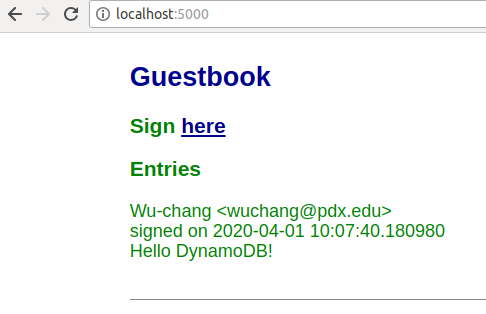
Type "Ctrl+c" to exit the application.
Then, bring up the AWS Console and navigate to the DynamoDB service. Click on "Tables" in the left navigation pane to list the tables that have been created, and then click on the "guestbook" table that has just been created by the Python application.
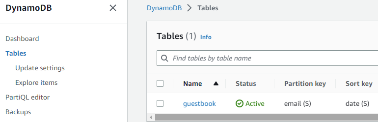
Click on the "Items" tab and view the entry you have just added to your DynamoDB table. Go back to your Ubuntu VM and type "Ctrl+c" to exit out of the application.
Locally running our code is great if we're the only ones who need to run it and if the number of users we have is limited. Eventually, when this application takes over the world, we will want to run it everywhere and have the ability to scale it up to run on hundreds of servers. Containers help us address both of these issues. They package up our application's environment so that it can be shipped anywhere and they can be replicated across a multitude of servers as long as any persistent state is stored outside of the container (in this case, our DynamoDB backend).
Examine the Dockerfile we will be using to containerize our application and change the maintainer to yourself. As the file shows, we'll use python:alpine as the base layer and then run our container using gunicorn. Note that the command line parameters used for executing gunicorn include a flag --bind that will either pull the port for gunicorn to listen on from the environment variable PORT passed into the container or else use 80 if the environment variable is not set. In addition the application:application argument specifies that gunicorn will go to application.py and launch the application object within it to start the server.
Dockerfile
# Use a small Python-based distribution for base layer
FROM python:alpine
# Specify your e-mail address as the maintainer of the container image
LABEL maintainer="yourname@pdx.edu"
# Copy the contents of the current directory into the container directory /app
COPY . /app
# Set the working directory of the container to /app
WORKDIR /app
# Install the Python packages specified by requirements.txt into the container
RUN pip install -r requirements.txt
# Set the parameters to the program
CMD exec gunicorn --bind :${PORT:-80} --workers 1 --threads 8 application:applicationThe contents of the entire directory in which we are building our Docker container is copied via the COPY . /app command. Unfortunately, this directory contains our local Python environment and dynamically compiled Python code from our previous version. We do not want to include these directories in our container image. Much like .gitignore can be used to ignore files in git, a .dockerignore file does the same for docker as shown below:
.dockerignore
env
__pycache__Build the container with the following command. If you get a permission error, you will need to add your username to the docker group via usermod or run the command using sudo.
docker build -t aws_gb .
We will now run a containerized version of the application. The container requires the AWS environment variables to be set in order to authenticate access to our DynamoDB backend. While we could set them directly when running directly in the shell previously, for our container version, we need to pass them in via the docker command. We could get around this by copying the credentials into the container image itself, but this is not recommended for security reasons since anyone that is able to access the container image will now be able to access our credentials and tamper with our DynamoDB backend.
Go back to the Vocareum console and view the "AWS Details". Since these particular credentials we're using are ephemeral, we must make sure to pass container credentials that are still valid. Then, using the AWS environment variables listed, run the following docker command on your Ubuntu VM (substituting your credentials). The command sets all of the environment variables via the --env flag, including the PORT variable specifying that the container will listen on port 80. The -p flag then maps the Ubuntu VM's port 8000 to the container's port 80. Finally, the name of the container built above is specified.
docker run --env AWS_ACCESS_KEY_ID=ASIA...32F --env AWS_SECRET_ACCESS_KEY=p22Z...COe --env AWS_DEFAULT_REGION=us-east-1 --env AWS_SESSION_TOKEN=FwoG...A== --env PORT=80 -p 8000:80 aws_gb
After running this command, you should see the container output showing the server running:
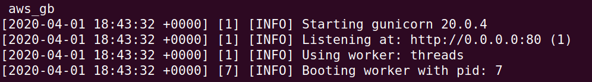
Bring up a browser on your Ubuntu VM and visit the application via http://localhost:8000. Sign the guestbook with your name and PSU e-mail address with the message "Hello Docker DynamoDB".
- Take a screenshot of the output for your lab notebook.
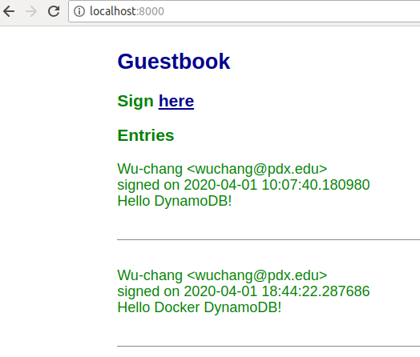
Type "Ctrl+c" to exit the container. Go back to the AWS DynamoDB console and see that a second item has been added to the table.
Examine the container image you've built to see its size.
docker images
Currently, the container image has a local tag aws_gb. We wish to distribute our container image widely so that it can be run anywhere and everywhere. To do so, we'll repeat the steps from before to tag and push our image to DockerHub. First, login to your DockerHub account from the Ubuntu VM.
docker login
Then, tag the image with your Docker ID.
docker tag aws_gb <dockerhub_id>/aws_gb
Finally, push the image to Docker Hub.
docker push <dockerhub_id>/aws_gb
- Take a screenshot of the container image on DockerHub.
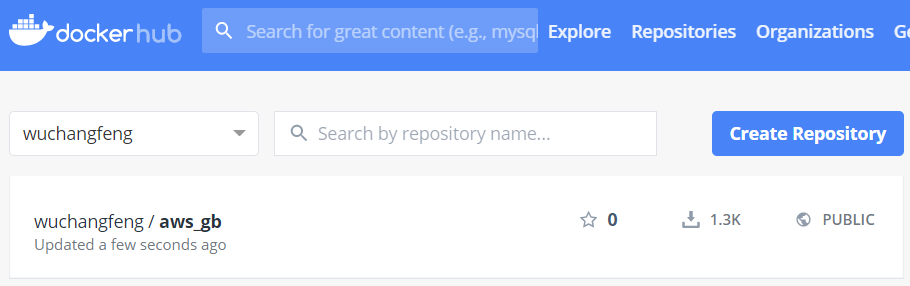
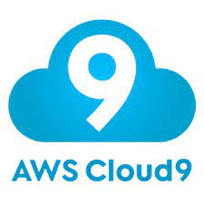
Cloud9 is an IDE (integrated development environment) that streamlines the production of cloud applications. The Cloud9 service automatically launches an EC2 instance that both hosts the IDE and can run any applications being developed. To make things easier on the developer, the service-linked role (AWSServiceRoleForAWSCloud9) given to the EC2 instance is quite permissive, allowing access to most services the account has access to. Using Cloud9, we will now run a version of our Guestbook within AWS. To begin with, launch the IDE.
Option #1: Web UI
Find the Cloud9 service in the AWS Management Console and begin the process of creating a new environment.
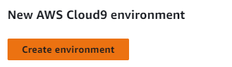
Then,
- Name the environment
guestbook - Create a new EC2 instance to run it
- Specify Ubuntu as the underlying platform
- Specify ssh as the connection access method
When the setup completes, we have a Cloud9 environment running on an EC2 instance where we can run our app. Find the EC2 instance running your environment via the Cloud9 web console or the EC2 web console. Make a note of the instance's IPv4 Public IP address. Our guestbook will be running on this IP address..

Option #2: Cloud Shell
Alternatively, one can launch the environment using the following CLI command.
aws cloud9 create-environment-ec2 --name guestbook \
--instance-type t2.micro --image-id ubuntu-18.04-x86_64 \
--region us-east-1Unless passed a port, the Python/Flask application will serve our guestbook on port 5000. In order for it to be reachable, we need to configure the security group for our Cloud9 EC2 instance to allow traffic to this port. This change is much like setting a firewall rule.
Click on the instance to view its details.

Find the security group for the instance aws-cloud9-guestbook... and edit its inbound rules.
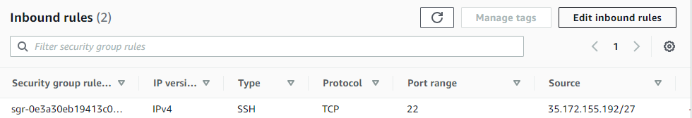
Add a custom TCP rule for port 5000 that allows source traffic from anywhere. Click "Save rules" to update the security group rules.

Go back to your Cloud9 environment and bring up the bash terminal within it. Clone the repository and change into the source directory
git clone https://github.com/wu4f/cs430-src cd cs430-src/05_aws_dynamodb
Set up the virtual environment and install the dependencies
python3 -m venv env source env/bin/activate pip install -r requirements.txt
Run the application
python application.py
Visit the Guesbook at the IP address you noted earlier on port 5000. Add a guestbook entry that uses your name and PSU email with a message "Hello Cloud9!".
- Take a screenshot as before that shows your entry and the IP address in the URL bar.
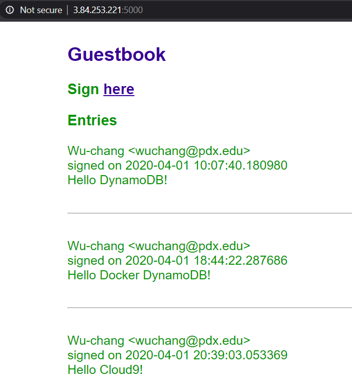
The entry has been added to the DynamoDB guestbook table. As before, revisit the DynamoDB table via the AWS Management Console and verify that the entry has been added.
Cloud9 makes it easy for developers by automatically generating a service-linked role to the EC2 instance that runs the IDE and attaching a policy with a generous amount of permissions. While this makes things convenient for developing, one would typically not use such a setup to deploy production services. A more realistic scenario would be to deploy the application once it is ready to an EC2 instance with just the permissions it needs to run the application.
In this lab, you will deploy onto an EC2 instance using a pre-defined role with a limited set of permissions. From your Ubuntu VM, visit the AWS console and navigate to EC2. Begin the steps to launch a new instance.
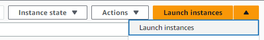
Use the following specifications:
- Name the instance
guestbook - Specify a Ubuntu 64-bit x86 OS
- Create a key pair named
awslabto use to login to the instance and download the private keyawslab.pem. - In "Network settings", create a new security group that allows both ssh and HTTP traffic to the instance
Finally, in the Advanced section of the instance, locate the settings for specifying an IAM instance profile to associate with the VM. The pre-defined role LabInstanceProfile contains permissions to utilize DynamoDB. Select the role.
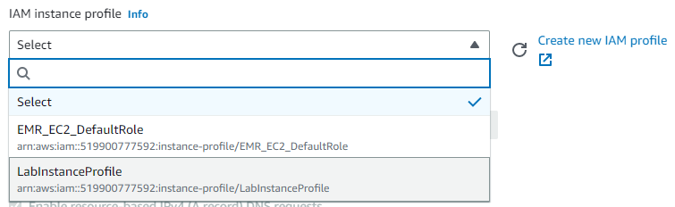
Click on "Launch Instances" and then on "View Instances" and wait for the VM to get into a "running" state. Click on the instance when it is up and note its public IPv4 address.
We can connect to our VM using the ssh key we setup. To do so, go back to the machine you downloaded the ssh key to and change into the ~/Downloads directory where the download is located. Set the permissions of the key previously downloaded to be read-only by the user.
cd ~/Downloads chmod 400 awslab.pem
Using the downloaded key, ssh into the EC2 instance either via its IP address or via the DNS name. Since this is a Ubuntu-based EC2 instance, the username associated with the key is ubuntu.
ssh -i awslab.pem ubuntu@<IP_address_of_EC2>
Since we've gone through the trouble of publishing our application as a Docker container on DockerHub for all the world to run, we can start our web domination by running it on our EC2 instance. To begin with, we'll first install Docker.
sudo apt update -y sudo apt install docker.io -y
Then, we simply run the container using its DockerHub identifier. Because docker is a privileged command and we are running on a privileged port (80), we must run the command via sudo. AWS resources are typically tied to a region. In our case, we must run on us-east-1 as part of our sandbox limitations. Note that, unlike our prior version, AWS credentials do not have to be supplied since requests to DynamoDB from this EC2 instance will automatically assume the role we defined.
sudo docker run --env AWS_DEFAULT_REGION=us-east-1 -p 80:80 <dockerhub_id>/aws_gb
Visit the site using the instance's IP address via http://<IP_address_of_EC2>
Add a guestbook entry that uses your name and PSU email with a message "Hello EC2!".
- Take a screenshot as before that shows your entry and the IP address in the URL bar.
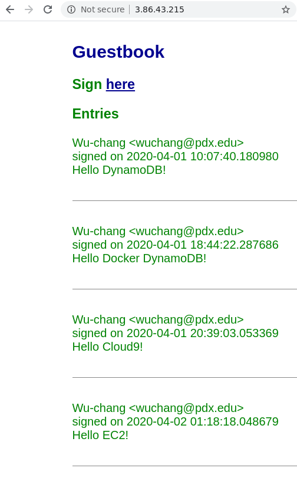
Go back to the table in DynamoDB. Explore the table items to see tthe entries in the Guestbook.
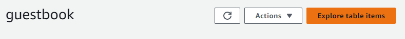
- Take a screenshot that shows all of the guestbook entries that you added to the DynamoDB table including their timestamps.
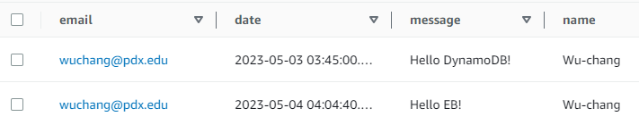
Visit Cloud9 and delete the environment. This will automatically terminate the EC2 instance used to run the IDE. Note that this is done via the CloudFormation service which will be covered later.
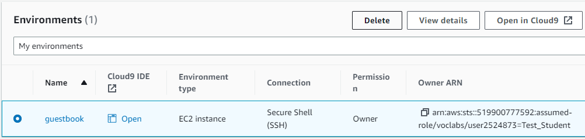
Visit EC2 and terminate the remaining instance.
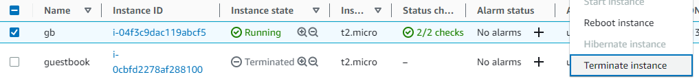